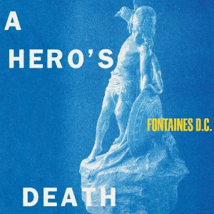
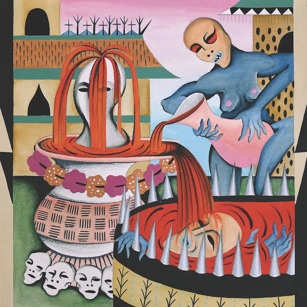
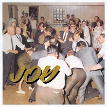

A Hero's Death
Fotaines D.C.
"A Hero's Death" é o segundo álbum da banda irlandesa Fotaines D.C., lançado em 31 de julho de 2020. Mostra uma evolucão muito grande
da banda, trazendo letras e melodias introspectivas, que acaba nos fazendo ter uma sensação de incerteza ainda maior nos dias atuais.

Impenetrable Cerebral Fortress
Gultch
"Impenetrable Cerebral Fortress" também e o segundo full length da banda americana Gultch. Essa emergente banda de death/punk/hardcore/grind metal vem chamando muita atencão
no cenário underground americano e europeu. Esse álbum conta com a supreendente faixa "Sin in My Heart", fechando inesperadamente o disco, que contem 8 músicas e apenas 15 minutos.

Joy As An Act Of Resistance
Idles
Não tao novo assim, "Joy As An Act Of Resistance" (lançado em 31 de agosto de 2018), é (novamente) o segundo álbum da banda britânica Idles. Contendo, como ja é de praxe pra
banda, letras carregadas de questões políticas e sociais muito importantes nos dias atuais, esse álbum deu a banda fama mundial. Recentemente, (em 2 de setembro de 2020),
o Idles fez 3 performances ao vivo no Abbey Road, o famoso estúdio em que os Beatles gravaram diversos sucessos.
